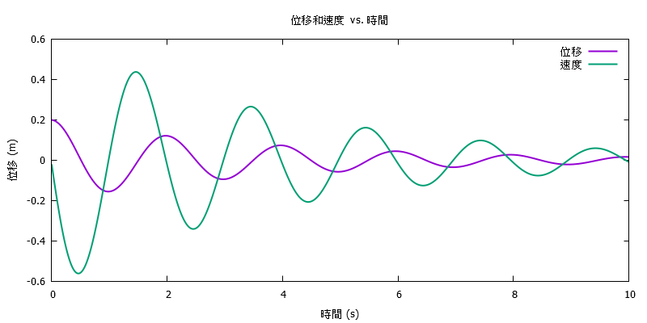
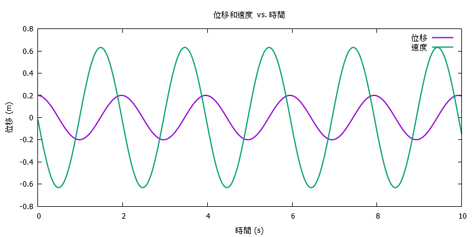
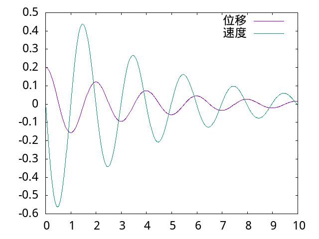
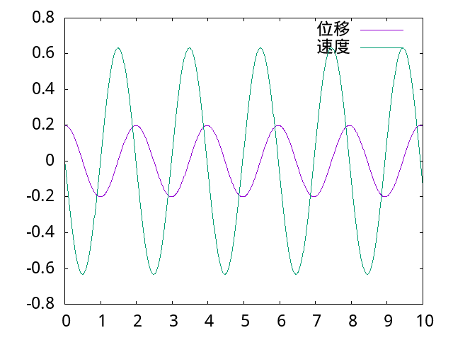

程式語言 <<
Previous Next >> on_linux
ANSI C
jsliu_c_programming.pdf (需要下載密碼)
Introduction to C (經由校園網路或 VPN 下載)
1999 C Programming - The Essentials for Engineers and Scientists (經由校園網路或 VPN 下載)
2004 Beginning C (經由校園網路或 VPN 下載)
2013 Advanced Topics in C (經由校園網路或 VPN 下載)
2013 Pointers in C (經由校園網路或 VPN 下載)
2015 Learn to Program with C (經由校園網路或 VPN 下載)
2015 C Quick Syntax Reference (經由校園網路或 VPN 下載)
2015 Beginning C for Arduino, Second Edition (經由校園網路或 VPN 下載)
2016 Practical C (經由校園網路或 VPN 下載)
2017 C Recipes (經由校園網路或 VPN 下載)
2019 Numerical C (經由校園網路或 VPN 下載)
2019 Modern C Quick Syntax Reference (經由校園網路或 VPN 下載)
2020 Computer Programming in C for Beginners (經由校園網路或 VPN 下載)
2020 Practical Numerical C Programming (經由校園網路或 VPN 下載)
2020 Beginning C (經由校園網路或 VPN 下載)
2020 Robot Adventures in Python and C (經由校園網路或 VPN 下載)
2021 Pointers in C Programming (經由校園網路或 VPN 下載)
2022 C and Python Applications (經由校園網路或 VPN 下載)
本頁課程內容的實際應用.
- ANSI C 程式語言所謂具有可攜性, 是甚麼意思?
- ANSI C 被定位為低階程式語言, 是甚麼意思?
- 可以用 ANSIＣ加上Gnuplot 繪圖 (Gnuplot Documentation), 解一個質量與兩個並聯的彈簧與阻尼器連接到牆上, 且起始條件為執行被往後拉 0.2 m 後放開的常微分方程式, 並劃出該質量被釋放之後 10 秒之內的位移以及速度圖嗎?
- 請詳細解釋所謂的 Euler's Method, 並且能不能將 Gnuplot 繪圖指令直接與 C 程式合併, 執行程式後直接產生位移與速度 png 圖?
- 能不能將 gnuplot 繪圖程式碼與 Euler's Method 解微分方程式的程式碼結合在一起, 執行時直接就能繪出質量的位移與速度圖, 而且請在繪圖時直接使用位於 Y:\ 的 wqy-microhei.ttc 中文字形, 否則無法在圖面上顯示出正確的中文.
- 請將質量的位移以及速度繪製在同一個 png 圖檔上
利用 Euler's Method 解 mass-spring-damper 系統的運動方程式, 並採 ANSI C 與 Gnuplot 執行運算及繪圖.
euler_mass_spring_damper_gnuplot.7z
#include <stdio.h>
int main() {
// 開啟文件以寫入位移和速度數據
FILE *outputFile = fopen("motion_data.txt", "w");
if (!outputFile) {
fprintf(stderr, "無法創建數據文件。\n");
return 1;
}
// 模擬運動 10 秒並計算位移和速度，同時將數據寫入文件
double x = 0.2; // 初始位移
double v = 0.0; // 初始速度
double dt = 0.01; // 時間步長
double t = 0.0; // 時間
while (t <= 10.0) {
double acceleration = (-10.0 * x - 0.5 * v) / 1.0; // 這裡修改了系統的參數
v += acceleration * dt;
x += v * dt;
fprintf(outputFile, "%lf %lf %lf\n", t, x, v);
t += dt;
}
// 關閉數據文件
fclose(outputFile);
// 使用popen啟動Gnuplot進程
FILE *gnuplotPipe = popen("gnuplot -persistent", "w");
if (!gnuplotPipe) {
fprintf(stderr, "無法啟動Gnuplot。\n");
return 1;
}
// 使用Gnuplot繪圖指令，指定字型文件和輸出PNG
fprintf(gnuplotPipe, "set terminal png font 'Y:/wqy-microhei.ttc,10' size 800,400\n");
fprintf(gnuplotPipe, "set output 'motion_plot.png'\n");
fprintf(gnuplotPipe, "set title '位移和速度 vs. 時間'\n");
fprintf(gnuplotPipe, "set xlabel '時間 (s)'\n");
fprintf(gnuplotPipe, "set ylabel '位移 (m)'\n");
fprintf(gnuplotPipe, "plot 'motion_data.txt' using 1:2 with lines lw 2 title '位移', \
'motion_data.txt' using 1:3 with lines lw 2 title '速度'\n");
// 關閉Gnuplot進程
fprintf(gnuplotPipe, "exit\n");
pclose(gnuplotPipe);
return 0;
}
運算結果:

假如拿掉 Damping:

假如將 C 改寫為 Javascript, 並且使用 plotly.js 取代 Gnuplot, 可使用下列 html + Javascript 執行運算:
<!DOCTYPE html>
<html>
<head>
<script src="https://cdn.plot.ly/plotly-latest.min.js"></script>
</head>
<body>
<div id="plotDamping"></div>
<div id="plotNoDamping"></div>
<script>
// Function to simulate motion using Euler's method
function simulateMotion(MASS, SPRING_K, DAMPING_C, containerId) {
// Define simulation parameters
const totalTime = 10.0;
const dt = 0.01;
// Initialize data arrays
const timeData = [];
const displacementData = [];
const velocityData = [];
// Initial conditions
let t = 0.0;
let x = 0.2;
let v = 0.0;
while (t <= totalTime) {
timeData.push(t);
displacementData.push(x);
velocityData.push(v);
// Calculate acceleration based on parameters
const acceleration = (-SPRING_K * x - DAMPING_C * v) / MASS;
v += acceleration * dt;
x += v * dt;
t += dt;
}
// Plot the data
const displacementTrace = {
x: timeData,
y: displacementData,
mode: 'lines',
name: 'Displacement'
};
const velocityTrace = {
x: timeData,
y: velocityData,
mode: 'lines',
name: 'Velocity'
};
const layout = {
title: `Displacement and Velocity vs. Time (${containerId === 'plotDamping' ? 'With Damping' : 'No Damping'})`,
xaxis: { title: 'Time (s)' },
yaxis: { title: 'Displacement (m) / Velocity' }
};
const plotData = [displacementTrace, velocityTrace];
Plotly.newPlot(containerId, plotData, layout);
}
// Simulate motion with damping
simulateMotion(1.0, 10.0, 0.5, 'plotDamping');
// Simulate motion without damping
simulateMotion(1.0, 10.0, 0.0, 'plotNoDamping');
</script>
</body>
</html>
模擬運算結果為:
假如採用 C 以 Runge-Kutta 解 mass-spring-damper 系統運動模擬:
/* Runge Kutta for a set of first order differential equations */
// http://mde.tw/cad2020/content/W7.html
#include <stdio.h>
#include <math.h>
#define N 2 /* number of first order equations */
#define dist 0.01 /* stepsize in t*/
#define MAX 10.0 /* max for t */
FILE *output; /* internal filename */
FILE *output1; /* internal filename */
// 利用 pipe 呼叫 gnuplot 繪圖
FILE *pipe;
void runge4(double x, double y[], double step); /* Runge-Kutta function */
double f(double x, double y[], int i); /* function for derivatives */
void main(){
double t, y[N];
int j;
output=fopen("osc.dat", "w"); /* external filename */
output1=fopen("osc1.dat", "w"); /* external filename */
y[0]=0.2; /* initial position */
y[1]=0.0; /* initial velocity */
//fprintf(output, "0\t%f\n", y[0]);
for (j=1; j*dist<=MAX ;j++) /* time loop */{
t=j*dist;
runge4(t, y, dist);
fprintf(output, "%f\t%f\n", t, y[0]);
fprintf(output1, "%f\t%f\n", t, y[1]);
}
fclose(output);
fclose(output1);
pipe = popen("gnuplot -persist","w");
//fprintf(pipe,"set term png enhanced font \"v:/fireflysung.ttf\" 18 \n");
fprintf(pipe,"set term png enhanced font \"y:/wqy-microhei.ttc\" 18 \n");
//fprintf(pipe,"set yrange [68:70]\n");
fprintf(pipe,"set output \"rk_mass_spring_damper.png\"\n");
fprintf(pipe, "plot \"osc.dat\" title \"位移\" with lines, \"osc1.dat\" title \"速度\" with lines\n");
fprintf(pipe,"quit\n");
fprintf(pipe,"quit\n");
pclose(pipe);
}
void runge4(double x, double y[], double step){
double h=step/2.0, /* the midpoint */
t1[N], t2[N], t3[N], /* temporary storage arrays */
k1[N], k2[N], k3[N],k4[N]; /* for Runge-Kutta */
int i;
for (i=0;i<N;i++){
t1[i]=y[i]+0.5*(k1[i]=step*f(x,y,i));
}
for (i=0;i<N;i++){
t2[i]=y[i]+0.5*(k2[i]=step*f(x+h, t1, i));
}
for (i=0;i<N;i++){
t3[i]=y[i]+ (k3[i]=step*f(x+h, t2, i));
}
for (i=0;i<N;i++){
k4[i]= step*f(x+step, t3, i);
}
for (i=0;i<N;i++){
y[i]+=(k1[i]+2*k2[i]+2*k3[i]+k4[i])/6.0;
}
}
double f(double x, double y[], int i){
if (i==0)
x=y[1]; /* derivative of first equation */
if (i==1)
x=-10*y[0]-0.5*y[1];
return x;
}
模擬結果為:

假如拿掉 Damper, 則結果為:

假如將 Runge-Kutta C 改寫為 Javascript, 並在網頁中直接以 plotly.js 畫圖:
上列 Javascript 模擬運算的超文件為:
<!-- 引入 Plotly.js -->
<script src="https://cdn.plot.ly/plotly-latest.min.js"></script>
<!-- 用於顯示運動繪圖的 div -->
<div id="rkmotionPlot"></div>
<script>
const N = 2; // number of first order equations
const dist = 0.01; // stepsize in t
const MAX = 10.0; // max for t
let outputDataDamping = []; // to store data for displacement with damping
let output1DataDamping = []; // to store data for velocity with damping
let outputDataNoDamping = []; // to store data for displacement without damping
let output1DataNoDamping = []; // to store data for velocity without damping
function runge4(x, y, step, damping = false) {
let h = step / 2.0;
let t1 = [];
let t2 = [];
let t3 = [];
let k1 = [];
let k2 = [];
let k3 = [];
let k4 = [];
for (let i = 0; i < N; i++) {
t1[i] = y[i] + 0.5 * (k1[i] = step * f(x, y, i, damping));
}
for (let i = 0; i < N; i++) {
t2[i] = y[i] + 0.5 * (k2[i] = step * f(x + h, t1, i, damping));
}
for (let i = 0; i < N; i++) {
t3[i] = y[i] + (k3[i] = step * f(x + h, t2, i, damping));
}
for (let i = 0; i < N; i++) {
k4[i] = step * f(x + step, t3, i, damping);
}
for (let i = 0; i < N; i++) {
y[i] += (k1[i] + 2 * k2[i] + 2 * k3[i] + k4[i]) / 6.0;
}
}
function f(x, y, i, damping = false) {
if (i === 0) {
return y[1]; // derivative of first equation (velocity)
}
if (i === 1) {
if (damping) {
return -10 * y[0] - 0.5 * y[1]; // with damping
} else {
return -10 * y[0]; // without damping
}
}
return 0;
}
function simulateMotion() {
let t = 0.0;
let yDamping = [0.2, 0.0]; // initial position and velocity with damping
let yNoDamping = [0.2, 0.0]; // initial position and velocity without damping
for (let j = 1; j * dist <= MAX; j++) {
t = j * dist;
runge4(t, yDamping, dist, true); // simulate with damping
runge4(t, yNoDamping, dist, false); // simulate without damping
outputDataDamping.push([t, yDamping[0]]);
output1DataDamping.push([t, yDamping[1]]);
outputDataNoDamping.push([t, yNoDamping[0]]);
output1DataNoDamping.push([t, yNoDamping[1]]);
}
// Plot the data using Plotly.js
plotMotion();
}
function plotMotion() {
// Create traces for displacement and velocity with damping
const displacementTraceDamping = {
x: outputDataDamping.map((dataPoint) => dataPoint[0]),
y: outputDataDamping.map((dataPoint) => dataPoint[1]),
mode: 'lines',
name: 'Displacement (Damping)',
};
const velocityTraceDamping = {
x: output1DataDamping.map((dataPoint) => dataPoint[0]),
y: output1DataDamping.map((dataPoint) => dataPoint[1]),
mode: 'lines',
name: 'Velocity (Damping)',
};
// Create traces for displacement and velocity without damping
const displacementTraceNoDamping = {
x: outputDataNoDamping.map((dataPoint) => dataPoint[0]),
y: outputDataNoDamping.map((dataPoint) => dataPoint[1]),
mode: 'lines',
name: 'Displacement (No Damping)',
};
const velocityTraceNoDamping = {
x: output1DataNoDamping.map((dataPoint) => dataPoint[0]),
y: output1DataNoDamping.map((dataPoint) => dataPoint[1]),
mode: 'lines',
name: 'Velocity (No Damping)',
};
const data = [
displacementTraceDamping,
velocityTraceDamping,
displacementTraceNoDamping,
velocityTraceNoDamping,
];
// Layout configuration
const layout = {
title: 'Displacement and Velocity vs. Time',
xaxis: {
title: 'Time (s)',
},
yaxis: {
title: 'Displacement / Velocity',
},
};
// Plot the graph
Plotly.newPlot('rkmotionPlot', data, layout);
}
// Call the simulation function when the page loads
window.onload = simulateMotion;
</script>
最後, 將 Javascript 改為可以讓使用者選擇模擬參數以及起始條件:
上列可輸入模擬參數與起始條件的 html 程式碼:
<div><label for="mass">質量 (m):</label> <input id="mass" type="number" value="1.0"></div>
<div><label for="springConstant">彈簧常數 (k):</label> <input id="springConstant" type="number" value="10.0"></div>
<div><label for="dampingCoefficient">阻尼係數 (c):</label> <input id="dampingCoefficient" type="number" value="0.5"></div>
<div><label for="initialDisplacement">初始位移 (x0):</label> <input id="initialDisplacement" type="number" value="0.2"></div>
<div><label for="initialVelocity">初始速度 (v0):</label> <input id="initialVelocity" type="number" value="0.0"></div>
<div><label for="endTime">模擬時間 (endTime):</label> <input id="endTime" type="number" value="10.0"></div>
<p><button id="withDamping">模擬運動 (有阻尼)</button> <button id="withoutDamping">模擬運動 (無阻尼)</button></p>
<!-- 請注意!! 每一個 plotly.js 繪圖必須有各自的 id 名稱 -->
<div id="rkmotionPlot2"></div>
<script>// <![CDATA[
// 函數包裝，避免變數衝突
(function () {
const N = 2; // number of first order equations
const dist = 0.01; // stepsize in t
//const MAX = 10.0; // max for t
const endTime = parseFloat(document.getElementById('endTime').value);
// for debuging
const mass = parseFloat(document.getElementById('mass').value);
const springConstant = parseFloat(document.getElementById('springConstant').value);
const dampingCoefficient = parseFloat(document.getElementById('dampingCoefficient').value);
const initialDisplacement = parseFloat(document.getElementById('initialDisplacement').value);
const initialVelocity = parseFloat(document.getElementById('initialVelocity').value);
/*
console.log('Mass:', mass);
console.log('Spring Constant:', springConstant);
console.log('Damping Coefficient:', dampingCoefficient);
console.log('Initial Displacement:', initialDisplacement);
console.log('Initial Velocity:', initialVelocity);
*/
let outputDataWithDamping = []; // to store data for displacement and velocity with damping
let outputDataWithoutDamping = []; // to store data for displacement and velocity without damping
function runge4(x, y, step, damping = false) {
let h = step / 2.0;
let t1 = [];
let t2 = [];
let t3 = [];
let k1 = [];
let k2 = [];
let k3 = [];
let k4 = [];
for (let i = 0; i < N; i++) {
t1[i] = y[i] + 0.5 * (k1[i] = step * f(x, y, i, damping));
}
for (let i = 0; i < N; i++) {
t2[i] = y[i] + 0.5 * (k2[i] = step * f(x + h, t1, i, damping));
}
for (let i = 0; i < N; i++) {
t3[i] = y[i] + (k3[i] = step * f(x + h, t2, i, damping));
}
for (let i = 0; i < N; i++) {
k4[i] = step * f(x + step, t3, i, damping);
}
for (let i = 0; i < N; i++) {
y[i] += (k1[i] + 2 * k2[i] + 2 * k3[i] + k4[i]) / 6.0;
}
}
function f(x, y, i, damping = false) {
if (i === 0) {
return y[1]; // derivative of first equation (velocity)
}
if (i === 1) {
if (damping) {
return (-springConstant * y[0] - dampingCoefficient * y[1])/mass; // with damping
} else {
return (-springConstant * y[0])/mass; // without damping
}
}
return 0;
}
function simulateMotionWithDamping() {
let t = 0.0;
let y = [
parseFloat(document.getElementById('initialDisplacement').value),
parseFloat(document.getElementById('initialVelocity').value)
];
outputDataWithDamping = []; // Clear previous data
simulateMotion(t, y, true); // Simulate with damping
// for debuging, yes we got the values
//console.log('outputDataWithDamping:', outputDataWithDamping);
plotMotion(true); // Plot with damping
}
function simulateMotionWithoutDamping() {
let t = 0.0;
let y = [
parseFloat(document.getElementById('initialDisplacement').value),
parseFloat(document.getElementById('initialVelocity').value)
];
outputDataWithoutDamping = []; // Clear previous data
simulateMotion(t, y, false); // Simulate without damping
// for debuging, we got the values
//console.log('outputDataWithoutDamping:', outputDataWithoutDamping);
plotMotion(false); // Plot without damping
}
// for debuging
function simulateMotion(t, y, damping = false) {
for (let j = 1; j * dist <= endTime; j++) {
t = j * dist;
runge4(t, y, dist, damping);
if (damping) {
outputDataWithDamping.push([t, y[0], y[1]]);
} else {
outputDataWithoutDamping.push([t, y[0], y[1]]);
}
// Log the data for debugging
//console.log('t:', t);
//console.log('y:', y);
}
// we do get the array values
//console.log('outputDataWithDamping:', outputDataWithDamping);
//console.log('outputDataWithoutDamping:', outputDataWithoutDamping);
}
function plotMotion(damping = false) {
let data = [];
if (damping) {
// Create traces for displacement and velocity with damping
data.push({
x: outputDataWithDamping.map((dataPoint) => dataPoint[0]),
y: outputDataWithDamping.map((dataPoint) => dataPoint[1]),
mode: 'lines',
name: 'Displacement (Damping)',
});
data.push({
x: outputDataWithDamping.map((dataPoint) => dataPoint[0]),
y: outputDataWithDamping.map((dataPoint) => dataPoint[2]),
mode: 'lines',
name: 'Velocity (Damping)',
});
} else {
// Create traces for displacement and velocity without damping
data.push({
x: outputDataWithoutDamping.map((dataPoint) => dataPoint[0]),
y: outputDataWithoutDamping.map((dataPoint) => dataPoint[1]),
mode: 'lines',
name: 'Displacement (No Damping)',
});
data.push({
x: outputDataWithoutDamping.map((dataPoint) => dataPoint[0]),
y: outputDataWithoutDamping.map((dataPoint) => dataPoint[2]),
mode: 'lines',
name: 'Velocity (No Damping)',
});
}
// Layout configuration
const layout = {
title: 'Displacement and Velocity vs. Time',
xaxis: {
title: 'Time (s)',
},
yaxis: {
title: 'Displacement / Velocity',
},
};
// Plot the graph
Plotly.newPlot('rkmotionPlot2', data, layout);
}
// for debuging
//console.log(outputDataWithDamping);
//console.log(outputDataWithoutDamping);
// Call the simulation function when the page loads
//simulateMotionWithDamping(); // Initial simulation with damping
// Attach an event listener to the button
document.getElementById("withDamping").addEventListener("click", function () {
//console.log("Button with damping clicked.");
simulateMotionWithDamping();
});
document.getElementById("withoutDamping").addEventListener("click", function () {
//console.log("Button without damping clicked.");
simulateMotionWithoutDamping();
});
})();
// ]]></script>
Question: 如何讓模擬變數表單值變更後, 無需重新 refresh 頁面即可繪出運算結果?
Exercises:
請將上述各階段的數值分析結果與理論分析解(Wikipedia)的結果, 以圖示進行比較, 並以表列出各點的運算誤差.
程式語言 <<
Previous Next >> on_linux